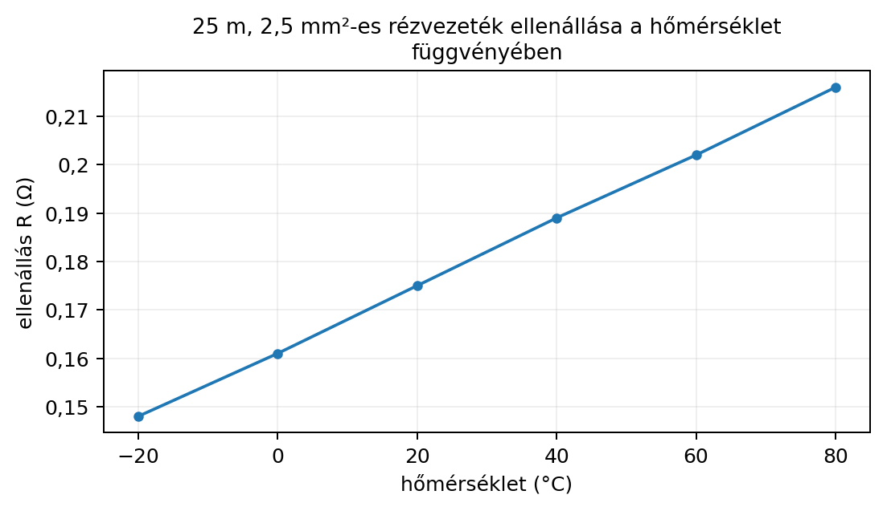

Egy hosszabbító kábel működés közben melegszik, a feszültség a kábel végén kisebb, mint a dugaszoló aljzatnál; egy motor tekercsének ellenállása hidegen kisebb, mint járás közben; egy izzólámpa bekapcsoláskor rövid időre nagyobb áramot vesz fel, mint üzemszerűen. Mindhárom jelenség mögött ugyanaz áll: a vezető ellenállása függ az anyagától, a méretétől és a hőmérsékletétől. Ha ezt érted, előre tudod becsülni a várható feszültségesést, a kábel melegedését vagy egy tekercs várható ellenállását – anélkül, hogy mindig csak mérnél.
Képzeld el a vezetéket úgy, mint egy csövet, amelyben apró golyók (a szabad elektronok) áramlanak. Minél hosszabb a cső, annál többször ütköznek a golyók a falába vagy a rácshibákba, tehát az ellenállás annál nagyobb. Ha a cső keresztmetszete nagyobb, egyszerre több golyó fér el, az ütközések hatása kisebb, így az ellenállás kisebb. Az anyag minősége pedig megmondja, hogy mennyire „engedékeny” a vezető rács: a rézben szabadabban mozognak az elektronok, mint például alumíniumban vagy vasban.
Egy egyszerű számpélda: 20 m hosszú, 1,5 mm² keresztmetszetű rézvezeték ellenállása 20 °C-on körülbelül 0,23 Ω. Ha 10 A áram folyik rajta, a vezeték egyik erén esik. Egy 230 V-os egyfázisú fogyasztóhoz azonban két ér (fázis és nulla) vezet, ezért a fogyasztó kapcsain hiányzó feszültség kb. , azaz kb. 2%. Ha a kábel hosszabb vagy vékonyabb, ez gyorsan nő.
Definíció. A fajlagos ellenállás (jele , görög ró) az adott anyag egységnyi hosszúságú és egységnyi keresztmetszetű darabjának ellenállása, adott hőmérsékleten. Gyakori mértékegysége a , de SI-ben a is használatos. Átváltás: .
A gyakorlatban használt közelítő értékek 20 °C-on:
| Anyag | () | () |
|---|---|---|
| Réz (Cu) | 0,0175 | |
| Alumínium (Al) | 0,028 | |
| Sárgaréz | kb. 0,07 | kb. |
| Vas/acél | kb. 0,10–0,13 | kb. |
Ezek a számok anyagminőségtől és szabványos besorolástól függően kissé eltérhetnek (ellenőrizendő: a pontos érték a gyártói adatlap vagy az aktuális szabvány szerint).
A táblázat számai a szerelő kezében valódi anyagként jelennek meg. Az alábbi tabló a leggyakoribb vezetőkiviteleket mutatja csupaszolt véggel és keresztmetszetben. Az 1 tömör (egyhuzalos) rézvezető merev, fix szerelésre való, és közvetlenül a kapocsba köthető; a 2 többhuzalos vezető néhány vastagabb szálból áll, így nagyobb keresztmetszetnél is hajlítható; a 3 finomhuzalos (hajlékony) vezető sok vékony szála mozgó részekhez és elosztókba való, de csak érvéghüvellyel (vagy arra alkalmas kapocsba) köthető. A 4 alumíniumvezetőnél a nagyobb fajlagos ellenállás miatt azonos ellenálláshoz kb. -szoros keresztmetszet kell. Az 5 ellenálláshuzalnál (pl. krómnikkel fűtőspirál) a nagy fajlagos ellenállás nem hiba, hanem cél: ott a hőtermelés a feladat.
A típusjelek (H07V-U, -R, -K) itt csak példák; a jelölésrendszert a Vezeték- és kábeltípusok, jelölésrendszer alfejezet tárgyalja. Figyelj arra, hogy réz és alumínium közvetlenül csak erre alkalmas (Al/Cu jelölésű) kötőelemmel köthető össze. A HTML-kiadásban egy sorra mutatva megjelenik az adott kivitel szerepe.
Összefüggés. Egy homogén anyagú, állandó keresztmetszetű vezető ellenállása:
ahol: - a vezető ellenállása (), - a fajlagos ellenállás (), - a vezető hossza (), - a vezető keresztmetszete ().
Fontos, hogy a mértékegységek összeillenek: ha mértékegysége , akkor a hosszt méterben, a keresztmetszetet pedig négyzetmilliméterben kell behelyettesíteni. Ha mértékegysége , akkor a keresztmetszetet négyzetméterben kell megadni, tehát .
Definíció. A fajlagos vezetés (vezetőképesség) a fajlagos ellenállás reciproka:
Mértékegysége gyakran (vagy , ahol a siemens (S) a vezetés egysége). A réz fajlagos vezetése 20 °C-on kb. , az alumíniumé kb. . A vezeték méretezésében sokszor a fajlagos vezetéssel számolunk, mert a képlet egyszerűbbé válik: a vezető vezetése .
A fémek ellenállása a hőmérséklet növekedésével nő, mert a melegebb rácsban jobban rezegnek az atomok, és az elektronok gyakrabban ütköznek. A gyakorlatban a szokásos üzemi hőmérséklet-tartományban (kb. –40 °C-tól 180 °C-ig) a változás lineárisnak tekinthető:
ahol a 20 °C-ra vonatkoztatott hőmérsékleti tényező ( vagy ). Rézre és alumíniumra ez kb. körüli, más fémekre ettől eltér.
A kifejezés átalakítható egy másik referencia-hőmérsékletre is: ha ismerjük az ellenállást hőmérsékleten, akkor hőmérsékleten az ellenállás:
amennyiben értékét a referencia-hőmérséklettől függetlenül állandónak vehetjük a vizsgált tartományban. Ez a közelítés a gyakorlatban a legtöbb számításhoz elegendő.
A fenti összefüggésből a hőmérséklet is kifejezhető, ha két ellenállásmérést végzünk:
Ezt használjuk például motorok tekercsének hőmérséklet-meghatározására ellenállásmérésből.
Az alábbi grafikon az 1. és 2. példa 25 m-es, 2,5 mm²-es rézvezetékének ellenállását mutatja −20 °C és 80 °C között: az ellenállás a hőmérséklettel lineárisan nő, 20 °C-on 0,175 Ω, 60 °C-on 0,202 Ω.

| Anyag, elem | Hőmérsékleti tényező | Jellemző felhasználás |
|---|---|---|
| réz, alumínium | ≈ +0,0039 1/K | vezetők, tekercsek |
| wolfram | ≈ +0,0045 1/K | izzószál |
| platina (Pt100) | ≈ +0,00385 1/K (0 °C-tól) | hőmérsékletmérés |
| konstantán | ≈ 0 | mérőellenállás, sönt |
| szén, NTC-termisztor | negatív, erősen nemlineáris | bekapcsolási áramkorlát, érzékelő |
| PTC-termisztor | küszöb fölött ugrásszerűen nő | motor hővédelme |
A számértékek tájékoztatóak (ellenőrizendő: anyag- és gyártói adat).
Alkalmazás. A motortekercsbe épített PTC a túlmelegedést jelzi a védőkészüléknek – lásd Motorvédő kapcsoló, hőkioldó, megszakító és szakaszoló. Az NTC-, PTC- és Pt100-elemeket a Hő-, fény- és feszültségfüggő elemek és érzékelők alfejezet tárgyalja, az épületautomatikai hőmérséklet-érzékelőket az Érzékelők: fény, mozgás, jelenlét, hőmérséklet.
Önellenőrző kérdés. Egy Pt100 ellenállása 115,4 Ω. Hány fokos? Válasz: .
A vezető ellenállása közvetlenül meghatározza a rajta eső feszültséget. A Feszültségesés és a vezeték méretezése alfejezetben majd részletesen számolunk, de itt az alapösszefüggés már látszik: ha egyfázisú fogyasztóhoz vezetéken áram folyik, a vezetéken (oda-vissza, tehát kétszeres hosszon) eső feszültségesés közelítőleg:
Minél kisebb a keresztmetszet, annál nagyobb a feszültségesés. A méretezéskor azt a legkisebb keresztmetszetet keressük, amelynél a feszültségesés a megengedett határon belül marad (a fogyasztói berendezésen belül jellemzően világításra 3%, más fogyasztókra 5% az ajánlott határ; a forrás a kisfeszültségű berendezések szerelési szabványa – ellenőrizendő: MSZ HD 60364-5-52 feszültségesésre vonatkozó melléklete és a tervezői előírás). Ehhez a rézre és alumíniumra megadott értékét kell használni.
Továbbvitt eredmény. A vezető ellenállásának kiszámítása az képlettel, valamint a hőmérsékletfüggés az képlettel alapvető eszköz lesz a következő alfejezetekben: - a Fémek és ötvözetek a villamosiparban alfejezetben az anyagok kiválasztásánál, - a Földelők és földelési ellenállás alfejezetben a földelő elektródák ellenállásának becslésénél, - valamint a Feszültségesés és a vezeték méretezése alfejezetben a vezeték-keresztmetszet meghatározásánál.
Ezt az összefüggést tehát a gyakorlatban is rendszeresen alkalmazni fogod, nem csak elméleti példaként.
Egy fűtőbetétes eszköz 2 kW teljesítményű, 230 V-os. A szerelő egy 30 m hosszú, 1,5 mm²-es hosszabbítóval csatlakoztatja. A hosszabbító kábel réz, így a kábel oda-vissza számított ellenállása:
A fűtőtest névleges árama: . A kábelen eső feszültség:
Ez még elfogadhatónak tűnhet (kb. 2,6%), de ha a csatlakozási ponton is van feszültségesés, vagy a kábel feltekerve van (rossz hűtés), a kábel melegedhet. Ráadásul ha a kábel 2,5 mm²-es lenne, az ellenállás csak kb. 0,42 Ω lenne, a feszültségesés pedig kb. 3,6 V-ra csökkenne. A szerelő ezért a hosszabbító kábelt mindig a fogyasztó teljesítményéhez illő keresztmetszettel választja ki.
Az alábbi grafikon ugyanezt a hosszabbítót különböző keresztmetszetekkel mutatja: a feszültségesés a keresztmetszettel fordítottan arányos (1,5 mm²: 2,65%, 2,5 mm²: 1,59%, 4 mm²: 0,99%, 6 mm²: 0,66%).
Helytelen mértékegység-átváltás. A fajlagos ellenállást -ben adják meg, de a keresztmetszetet méterben számolják. Például -t -ként behelyettesíteni óriási hibát okoz. Mindig ellenőrizd, hogy a mértékegységéhez igazodik-e a keresztmetszet és a hossz egysége.
A hőmérséklet-tényező rossz használata. Ha a 20 °C-os ellenállásból számolunk, akkor hőmérséklet-különbséggel szorzunk. Ha a képletet abszolút hőmérsékletre (kelvinre) írjuk fel, ügyelni kell a referencia-hőmérséklet helyes átszámítására. A gyakori hiba: , ahol a 0 °C-os ellenállás, nem pedig a 20 °C-os. Keverés esetén az eredmény jelentősen eltér.
Ellenállásmérés motoron hidegen, majd az üzemi ellenállásból hőmérséklet becslése anélkül, hogy a mérővezeték ellenállását kompenzálnák. Kétvezetékes mérésnél a mérőzsinór ellenállása hozzáadódik a tekercs ellenállásához, ami főleg kis ellenállásoknál (pl. 0,1–1 Ω) torzítja az eredményt. Ilyenkor négyvezetékes (Kelvin) mérést vagy a mérőzsinór ellenállásának levonását kell alkalmazni.
Gyakorlás: ennek az alfejezetnek a kidolgozott példái, gyakorlatai és megoldással ellátott feladatai az Összefoglaló feladatgyűjtemény villanyszerelő tanulóknak című kötet 3.4 szakaszában találhatók.
A vezető ellenállása az anyagtól, a mérettől és a hőmérséklettől függ. Az alapképlet: , ahol a fajlagos ellenállás. A réz 20 °C-os fajlagos ellenállása kb. , az alumíniumé kb. (a pontos érték a szabványos anyagminőségtől függ, ezért mindig ellenőrizendő). A fémek ellenállása a hőmérséklettel nő: , ahol a rézre és alumíniumra . Ebből két ellenállásmérésből becsülhető a tekercs hőmérséklete is: . Ezeket az összefüggéseket használjuk a vezetékméretezésnél a feszültségesés becslésére, valamint később az anyagválasztásnál és a földelési ellenállás számításánál: Fémek és ötvözetek a villamosiparban, Földelők és földelési ellenállás, Feszültségesés és a vezeték méretezése.
A fajlagos ellenállás és a hőmérsékleti tényező pontos értékei a vezetőanyag szabványos osztályától, tisztaságától és a hőmérséklettől függnek; a fent megadott értékek gyakorlati közelítések. A pontos értékeket a mindenkori anyagszabványok, gyártói adatlapok és a hálózati engedélyes előírásai tartalmazzák, ezért azokat minden ellenőrzési vagy tervezési feladat előtt ellenőrizni kell. Az SI-mértékegységek hivatalos definíciói a BIPM kiadványában találhatók (a forrást ebben a könyvben nem hivatkozzuk pontosan).